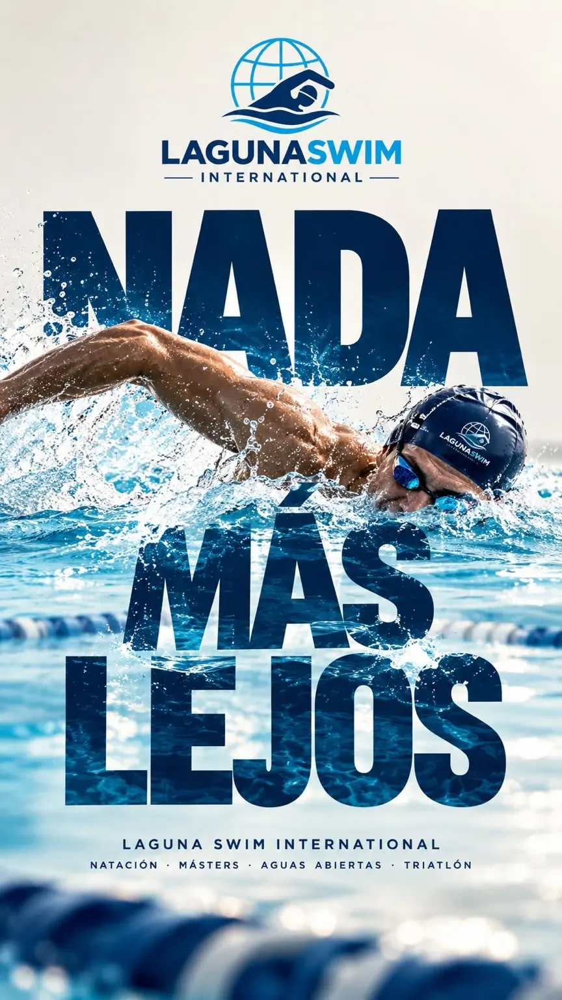

Aprender o reaprender
Nunca aprendiste bien, o aprendiste hace veinte años. Empezamos por respiración y posición del cuerpo, sin prisa y sin exhibirte.
Quiero empezarNatación para adultos en Torreón. Vengas a bajar de peso, a arreglar tu técnica después de años sin nadar o a buscar un pase al mundial, aquí entrenas en serio, con plan y con equipo.
Pedir informes por WhatsApp
Masters no significa avanzado, significa adulto. Elige lo que te trae al agua.
Nunca aprendiste bien, o aprendiste hace veinte años. Empezamos por respiración y posición del cuerpo, sin prisa y sin exhibirte.
Quiero empezarLa natación suele ser el segmento más débil del triatleta. Aquí se corrige técnica, se trabaja ritmo sostenido y se practica salida en aguas abiertas.
Mejorar mi nataciónPlanificación por temporada, control de marcas por prueba y preparación específica para seriales locales, nacionales Masters y PanAm.
Entrenar para competirPreparación para el circuito Oceanman: resistencia, navegación, sighting y estrategia de carrera para 1.5 K, 5 K y 10 K.
Prepararme para OceanmanEntre los nadadores del coach están Luisa Silva, con 5 oros panamericanos Masters, y Miguel De Lara, récord nacional mexicano de pecho y olímpico en París 2024.
Sergio "Checo" Villarreal, licenciado en acondicionamiento físico y certificado ASCA Nivel 4, con 30 años entrenando en La Laguna.

Hay planes personalizados a distancia para nadadores Masters que entrenan en su propia alberca.
Quiero mi plan a distancia

Sí. Masters no significa avanzado, significa adulto. Cada quien trabaja con su propio volumen y objetivo dentro del mismo horario.
No hay límite superior. La categoría Masters empieza a los 25 años y las competencias se organizan en rangos de cinco años, hasta 70 y más.
Con tres sesiones por semana se ve progreso real. Quien busca competir suele entrenar de cuatro a seis.
No. Muchos nadadores Masters entrenan solo por salud y por gusto. La competencia está disponible para quien la quiera, no es obligatoria.
Sí. Es una de las especialidades del equipo, con nadadores clasificados al Mundial Oceanman.
Escríbele al coach por WhatsApp y empieza a entrenar con el equipo Masters.
empezar